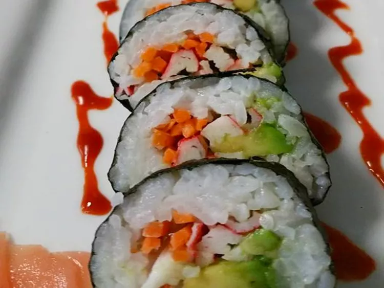

Description
Sushi rolls bring an exciting combination of fresh ingredients, vibrant
flavors, and artistic presentation to the table. Whether stuffed with
seafood, crisp vegetables, or creamy avocado, they offer endless
possibilities for customization.
Each bite balances the slight sweetness of sushi rice with the savory
fillings, all wrapped in a delicate sheet of nori. These versatile rolls
can be enjoyed with soy sauce, wasabi, and pickled ginger for the full
sushi experience.
Ingredients
- 2 cups sushi rice
- 2 tablespoons rice vinegar
- 1 teaspoon sugar
- 4 sheets nori (seaweed)
- 1 cucumber, julienned
- 1 avocado, sliced
- 200g salmon or crab meat (or a vegetarian alternative)
- Soy sauce for dipping
- Wasabi and pickled ginger for serving
Steps
-
Rinse sushi rice under cold water until the water runs clear. Cook
according to package instructions.
-
Mix rice vinegar and sugar into the cooked rice, then let it cool.
-
Place a sheet of nori on a bamboo sushi mat. Spread an even layer of
rice over the nori, leaving a small border at the top.
-
Arrange cucumber, avocado, and seafood (or vegetables) across the
middle of the rice.
-
Using the bamboo mat, roll tightly from the bottom edge, pressing
firmly to seal.
- Slice into bite-sized pieces using a sharp knife.
- Serve with soy sauce, wasabi, and pickled ginger.
Back to the homepage.